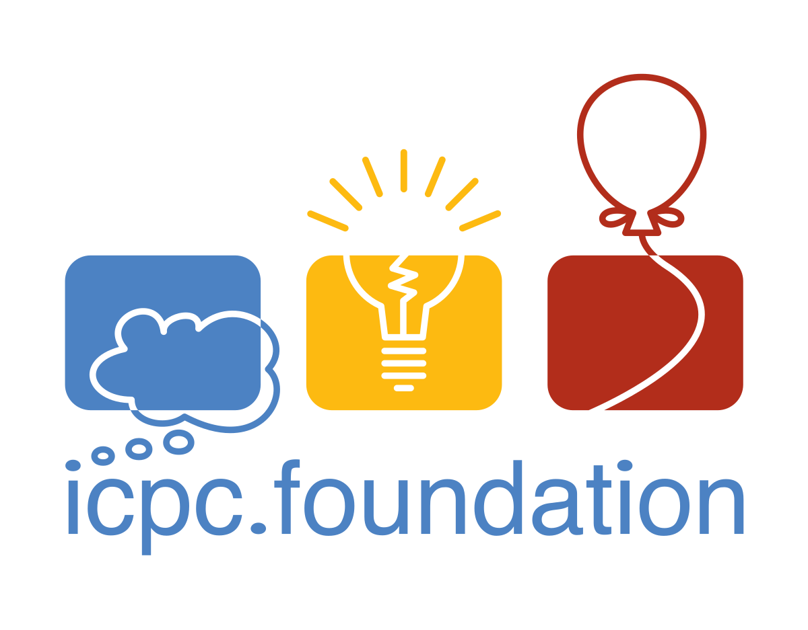
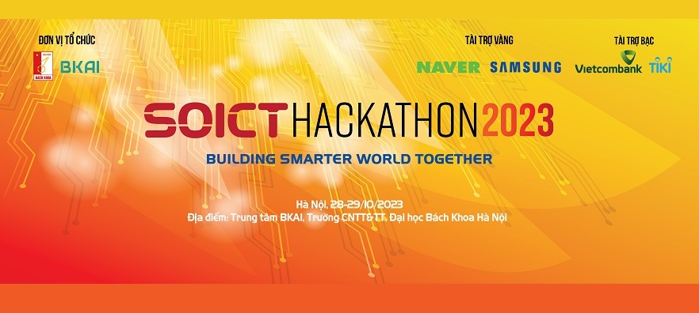

Introduction
- I am a senior student at UIT - HCMVNU.
- K16 - Computer Science - Honors program.
- Competitive Programming and algorithm is my forte.
- I also do exercises (running and martial arts), and learn languages (English).
- I do things with all my heart.

Scope
As I mention before, I got used to competitive programming and algorithm, which is evident in my achievements, so I can hazard a guess that I possess strong ability in terms of problem solving and logical thinking.
Currently, I'm learning many things to figure out what I really want to do. And I am looking for an internship or fresher position in the field of Software Engineer, where I can apply, learn and improve my related knowledge and skills, to embark on my career.
I'm a fast learner and I'm willing to learn new things as well as tackle hard problems. I always do things with all my heart because I believe that's amongst the keys to success.
English is amongst things I'm practicing in daily basis, not only because it's a must-have skill but also I really love it.
Achievements
↓ Go to bottom ↓
ICPC
- ICPC - International Collegiate Programming Contest - is the most prestigious programming contest in the world for university students.
- The main task is to solve a set of problems in a limited amount of time (5 hours).
- In Vietnam, ICPC is held annually and can be considered as the hardest competitive programming contest

My result [ICPCID]
- 2021: Second Prize at The 2021 ICPC Vietnam National Programming Contest
Team UIT.Excalibur, rank 30 - 2021: Co-third Prize at The 2021 ICPC Asia Hanoi Regional Contest
Team UIT.Excalibur, rank 30 - 2022: Second Prize at The 2022 ICPC Asia Ho Chi Minh City Regional Contest
Team UIT.Caliburn, rank 23 - 2023: Second Prize 08 at The 2023 ICPC Vietnam National Programming Contest
Team UIT.NTH.HolyGrail, rank 8 - 2024: Co-third Prize at The 2024 ICPC Asia Hanoi Regional Contest
Team UIT.STH.Shuriken, rank 20
SOICT Hackathon 2023 [SRC]

My Result: Rank 4 - track TIKI - Combinatorial Optimization
Publications
Tri Phan, Khang Tran, Ngoc Hoang Luong: Combining Adaptive Large Neighborhood Search with Guided Ejection Search for Real-World Multiple-Vehicle Pickup and Delivery Problem with Time Windows. GECCO Companion 2024: 203-206 (DOI:10.1145/3638530.3654421) (poster section, conference rank A)
keywords: PDPTW, ALNS, GES, Metaheuristic, Optimization, VRP